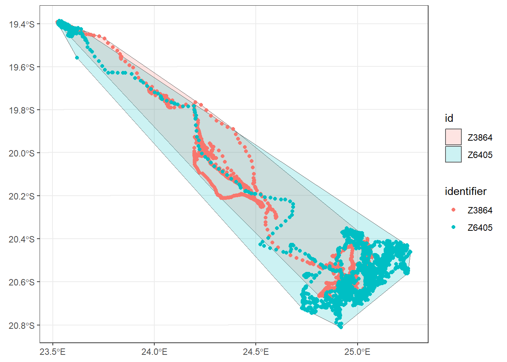
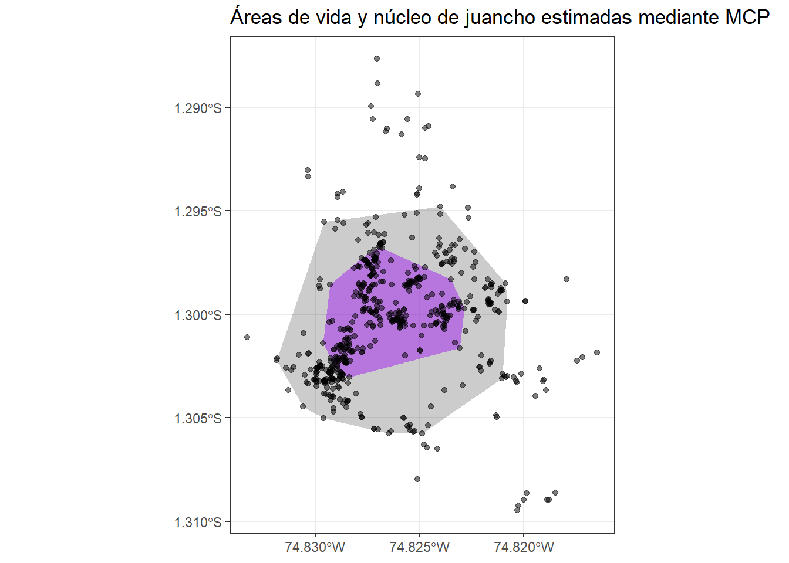

Obten el objeto zebras.transf
zebras.transf <- spTransform(zebras.proj,
CRS("+proj=lcc +lat_1=20 +lat_2=-23 +lat_0=0 +lon_0=25 +x_0=0 +y_0=0 +ellps=WGS84 +datum=WGS84 +units=m +no_defs"))La estimación de áreas de vida es una parte fundamental, pero no la única, en el estudio de la ecología y etología de los animales, y los artículos científicos de Kays et al. (2015), Abrahms et al. (2021), y Silva et al. (2022) son una excelente fuente de información si estás involucrándote en el mundo de la ecología de movimiento. Si bien existen diversos métodos por los cuales se pueden estimar dichas áreas, en este módulo aprenderás sobre métodos tradicionales ampliamente utilizados y que serán comparados más adelante con nuevos métodos en el paquete ctmm.
El paquete adeHabitatHR es uno de cuatro paquetes que hace unos años formaban parte del paquete ya deprecado adehabitat, y se especializa en el análisis de áreas de vida. Este paquete, sin embargo, se enfrenta a un riesgo a futuro ya que otros paquetes utilizados dentro de la disciplina del análisis espacial, dependían en gran medida de los paquetes raster, rgdal, rgeos, y sp, que fueron reemplazados en el 2023 por sf y terra. sp es el único que se adaptó a esta transición y adoptó funciones del paquete sf Sin embargo, adehabitatHR no se adaptó a esta transformación y depende de la instalación de estos paquetes que ya no reciben mantenimiento.
A pesar de esto, aprender sobre adeHabitatHR es aún necesario ya que no existe, a la fecha, un paquete que incorpore todas las utilidades que éste lo hace.
Ahora estimarás el área de vida de las zebras que fueron extraídas en el objeto zebras.transf en la Sección 3.2.
zebras.transfzebras.transf <- spTransform(zebras.proj,
CRS("+proj=lcc +lat_1=20 +lat_2=-23 +lat_0=0 +lon_0=25 +x_0=0 +y_0=0 +ellps=WGS84 +datum=WGS84 +units=m +no_defs"))Este método es de los más sencillo para dibujar los límites de distribución de un animal. Aunque su uso original Carl O. Mohr (1947) fue destinado a la identificación de animales recapturados en una malla de captura.
El uso del MCP es limitado ya que este describe el alcance de la distribución de ubicaciones de un individuo, mas no la verdadera área de vida del animal bajo estudio. Para una discusión más detallada sobre esto puedes leer Signer y Fieberg (2021), y un debate profundo sobre rangos y ocurrencia de distribución en C. H. Fleming et al. (2016).
A pesar de lo anteriormente mencionado, obtener el área del polígono y el poder ubicarlo sobre un mapa, nos permite observar a grosso modo el espacio y hábitat que ocupa cierto ejemplar.
library(adehabitatHR)
library(sf)
zebras.mcp <- mcp(zebras.transf[, "identifier"], percent= 100,
unin="m", unout= "ha")Ahora intenta con distintos porcentajes y observa las diferencias en tamaños de área.
Si bien puedes utilizar funciones base de R para graficar estos polígonos, aprovecha la interacción de estos paquetes con sf y ggplot2 para obtener un gráfico más estético.
library(ggplot2)
ggplot() +
geom_sf(data = st_as_sf(zebras.mcp), aes(fill = id),
alpha = 0.2) +
geom_sf(data = st_as_sf(zebras.transf), aes(colour = identifier)) +
coord_sf() +
theme_bw()
También puedes exportar estos polígonos con extensión kml para que puedas importarlos en Google Earth o cualquier software de tu preferencia.
st_write(st_as_sf(zebras.mcp), "zebras.kml", delete_layer = TRUE)Como caso de estudio, e intentando que mejores en el flujo de trabajo de estos análisis, creé un set de datos de tres mamíferos hipotéticos en la zona Norte de Loreto - Perú, y lo puedes descargar aquí.
mamiferos <- read.csv("mamiferos.csv")Como siempre, haz una exploración rápida de este objeto y grafica los puntos satelitales rápidamente.
plot(mamiferos[, c("longitude", "latitude")], pch=20)Realiza una limpieza de este set de datos, elimina outliers y datos faltantes, y crea un objeto que contenga únicamente a “juancho”. Finalmente, verifica que el proceso haya sido exitoso.
# Verificación visual
library(plotly)
mamiferos_outliers <- mamiferos %>%
ggplot(aes(x= longitude, y=latitude, colour = name))+
geom_point(alpha = 0.5)
ggplotly(mamiferos_outliers)Con los gráficos interactivos de plotly puedes usar el cursor para observar la posición exacta de los outliers. Si bien esto es de utilidad para un set de datos pequeño como este, puedes automatizar tu código para deshacerte de todos aquellos puntos menores a la longitud -76.
#Limpiar el data frame
juancho <- mamiferos[-which(mamiferos$longitude < -76),] |>
na.omit() |>
filter(name == "juancho")Ahora que has filtrado el set de datos, ya puedes realizar la proyeccion, transformación y cálculo del área de vida y núcleo de juancho.
juancho.proj <- SpatialPointsDataFrame(coords = as.data.frame(cbind
(juancho$longitude, juancho$latitude)),
data = juancho, proj4string = CRS("+proj=longlat +ellps=WGS84 +datum=WGS84 +no_defs"))A diferencia de las zebras, sabemos que nuestro lugar de muestreo es pequeño, y en una región tropical, por ende necesitamos un método de proyección adecuado. Entre tantos métodos existentes, ¿cuál elegirías? En estos casos, lo aconsejable es utilizar Universal Transverse Mercator (UTM). No obstante, para hacer uso de este método de proyección, aún nos falta conocer un dato importante, la zona y el hemisferio.
Podemos copiar y pegar cualquiera de los puntos de nuestro set de datos en esta página para poder conocer la información faltante.
juancho.transf <- spTransform(juancho.proj,
CRS("+proj=utm +south +zone=18 +ellps=WGS84"))Si deseas conocer las coordenadas UTM de todos los puntos, puedes crear un nuevo objeto y ejecutar las siguientes líneas.
juancho.utm <- coordinates(juancho.transf)
head(juancho.utm)
## coords.x1 coords.x2
## [1,] 519037.6 9855961
## [2,] 518962.0 9855943
## [3,] 518962.0 9855956
## [4,] 518958.6 9855959
## [5,] 518960.9 9855956
## [6,] 518966.4 9855952Estima el área de vida (90%) y núcleo (50%) de juancho mediante el método MCP y realiza un gráfico mostrando ambos polígonos y puntos satelitales.
juancho.mcp.90 <- mcp(juancho.transf[, "name"], percent = 90,
unin = "m", unout = "ha")
juancho.mcp.50 <- mcp(juancho.transf[, "name"], percent = 50,
unin = "m", unout = "ha")Tal como lo hiciste para el set de datos de zebras, puedes transformar los objetos SpatialPolygonsDataFrame a un objeto sf para graficarlo fácilmente.
ggplot() +
geom_sf(data = st_as_sf(juancho.mcp.90),
color = "NA",
fill = "black",
alpha = 0.2) +
geom_sf(data = st_as_sf(juancho.mcp.50),
color = "NA",
fill = "purple",
alpha = 0.5) +
geom_sf(data = st_as_sf(juancho.transf), alpha = 0.5) +
coord_sf() +
labs(title = "Áreas de vida y núcleo de juancho estimadas mediante MCP") +
theme_bw()
En KDE, una colina tri-dimensional o kernel es formada junto a cada punto, la forma y altura de esta colina depende del ancho de banda (bandwidth). En este curso calcularás el KDE mediante el “fixed kernel” o href, “least squares cross-validation” o lcsv, e intentarás ajustar el bandwidth manualmente. La teoría sobre estos métodos, sus pros y contras pueden ser encontrados en estos links: [1], [2].
juancho.khref <- kernelUD(juancho.transf[, "name"], h = "href")
# Observa este raster
image(juancho.khref)Si quieres exportarlo para su uso en otros softwares como ArcGis puedes seguir estos pasos.
juanchopix <- estUDm2spixdf(juancho.khref)
st_write(st_as_sf(juanchopix), "juancho.shp", delete_layer = TRUE)
# Mira otros formatos disponibles con st_drivers()También puedes plotearlo en R.
# Tambien lo puedes graficar en R
plot(juanchopix)
plot(juancho.transf, add = T, cex = 0.1)Utilizando estos objetos, ya puedes estimar el área de vida de juancho mediante el método KDE.
# Estimo el area usando el objeto juancho.khref segun una secuencia de porcentajes
kernel.area(juancho.khref, percent = seq (20, 95, 5),
unin="m", unout="ha")
## juancho
## 20 10.51807
## 25 15.02581
## 30 18.03098
## 35 22.53872
## 40 27.04646
## 45 31.55421
## 50 37.56453
## 55 43.57486
## 60 49.58518
## 65 58.60067
## 70 67.61616
## 75 79.63681
## 80 96.16520
## 85 117.20134
## 90 150.25813
## 95 204.35106Ahora puedes utilizar la función getverticeshr para obtener los polígonos que te permitirán graficar el área de vida y núcleo de juancho.
# Polígonos para el plot final
juancho.KDE90 <- getverticeshr(juancho.khref, percent = 90)
juancho.KDE50 <- getverticeshr(juancho.khref, percent = 50)
# Usa ggplot para graficar
ggplot() +
geom_sf(data = st_as_sf(juancho.KDE90),
color = "NA",
fill = "black",
alpha = 0.2) +
geom_sf(data = st_as_sf(juancho.KDE50),
color = "NA",
fill = "purple",
alpha = 0.5) +
geom_sf(data = st_as_sf(juancho.transf), alpha = 0.5) +
coord_sf() +
labs(title = "Áreas de vida y núcleo de juancho estimada mediante KDE") +
theme_bw()La función getvolumeUD también te permite calcular el área de vida, pero ¿cuál crees que sea la diferencia entre ambos métodos?
Con el advenimiento de nuevas tecnologías para el rastreo de animales, algunos problemas se hicieron evidentes debido al cumulo de información generada por los nuevos dispositivos. Esto conllevó al desarrollo del sistema Movebank, para poder mejorar el manejo del gran volumen y diversidad de información (Kays et al. (2022)).
Movebank es una plataforma web que permite almacenar datos de telemetría (GPS, Argos, VHF, etc) de manera privada y/o pública. A la fecha, cuentan con un total de 6 billones de locaciones generadas por más de 8 mil estudios que compreden a aproximadamente 1500 taxones. Además, almacena una gran diversidad de información asociada a cada proyecto (persona de contacto, grants, cita, licencia, etc), animal (Nombre, especie, peso, edad, etc) y a los sensores del collar (temperatura externa, altitud, frecuencia cardíaca, DOP, etc.
Estas variables han sido estandarizadas mediante lenguaje persistente, mediante una lista de vocabulario extensa que puede ser leído por máquinas y que está disponible en el Natural Environment Research Council’s Vocabulary Server (mira los detalles aquí).
El trabajo que realizarás a continuación utilizará una porción de los datos recolectados por Castellanos et al. (2022) de un zorro andino en Ecuador que puedes obtenerla aquí. Sin embargo, si quieres trabajar con las más de 6 mil posiciones satelitales, puedes acceder al repositorio de Movebank, o también puedes crear una cuenta en www.movebank.org y buscar el proyecto “Home range and movement patterns of the Andean Fox in Cotopaxi National Park Ecuador”.
Una excelente forma de atraer la atencion a tus proyectos y de alcanzar a un publico general, es mostrandocomo el animal se desplaza por su area de vida sobre mapas satelitales. Con este proposito fue diseñado moveVis.
Ya que moveVis ha pasado por algunos cambios que no han sido cargados al repositorio de CRAN y este ha sido removido de este, te recomiendo descargar la versión 0.10.5 desde aquí. Posteriormente, dirigete a la pestaña de Packages en R Studio y elige la opción Install en la esquina superior izquierda, y elige instalar desde un archivo .tar.gz. Ahora selecciona el directorio donde lo descargaste e instalalo.
Accede a Movebank y descarga el set de datos que utilizarás hoy para animar los movimientos de un jaguar muestreado en la Caatinga en Brasil. Para esto, ingresa al mapa y escribe “jaguar conservation in the caatinga biome”, elige el estudio y haz click en “Open in studies page”. Una vez aparezca la ventana que contiene todo acerca de este estudio, haz clic en “Download” y descarga este archivo en formato csv.
Debido a la gran cantidad de datos colectados en este estudio, selecciona solo a uno de los jaguares.
library(moveVis)
library(move)
library(tidyverse)
# Importa los datos
jaguars <- read_csv("Jaguars.csv")
# Selecciona a Courisco
courisco <- jaguars %>%
filter(`individual-local-identifier` == "Courisco")Ahora deberas llevar a cabo unos cuantos pasos para poder animar los movimientos de Courisco.
# Transformar en objeto move
courisco_move <- df2move(courisco[1:4500,],
proj = "+proj=longlat +south +zone=23 +ellps=WGS84",
x = "location-long", y = "location-lat", time = "study-local-timestamp",
track_id = "individual-local-identifier")Es importante saber cual es la frecuencia de muestreo antes de obtener los frames de la animacion.
# Visualizar frecuencia de muestreo
lagging <- timeLag(courisco_move,
unit="mins")
summary(lagging)
## Min. 1st Qu. Median Mean 3rd Qu. Max.
## 58.00 60.00 60.00 67.59 60.00 840.00
# Histograma de frecuencias de muestreo
hist(lagging, xlab= "mins", xlim= c(0, 400), breaks= 40)Utiliza el numero estimado anteriormente para alinear y estandarizar la frecuencia de muestreo sobre el objeto.
courisco_move <- align_move(courisco_move, res = 60, unit = "mins")Hay una variedad de mapas que puedes utilizar como fondo para tu animacion.
##ver mapas disponibles
get_maptypes()
## $osm
## [1] "streets" "streets_de" "streets_fr" "humanitarian" "topographic"
## [6] "roads" "hydda" "hydda_base" "hike" "grayscale"
## [11] "no_labels" "watercolor" "toner" "toner_bg" "toner_lite"
## [16] "terrain" "terrain_bg" "mtb"
##
## $carto
## [1] "light" "light_no_labels" "light_only_labels"
## [4] "dark" "dark_no_labels" "dark_only_labels"
## [7] "voyager" "voyager_no_labels" "voyager_only_labels"
## [10] "voyager_labels_under"
##
## $mapbox
## [1] "satellite" "streets" "streets_basic" "hybrid"
## [5] "light" "dark" "high_contrast" "outdoors"
## [9] "hike" "wheatpaste" "pencil" "comic"
## [13] "pirates" "emerald"Tambien puedes indicar cuantos nucleos quieres utilizar para acelerar el proceso.
##utilizar nucleos
use_multicore()
use_multicore(n_cores = numero)Finalmente, utiliza el objeto alineado y estandarizado para obtener los frames.
# Crear el objeto que alamcene los frames de la animacion
frames <- frames_spatial(courisco_move,
map_service = "osm",
map_type = "topographic",
path_legend = F,
path_colours = "black",
path_alpha = 0.8,
tail_size = 2,
tail_length = 5)
frames[[535]]Puedes editar el formato de estas imagenes siguiendo el estilo de escritura de ggplot.
frames_edit <- add_labels(frames, x = "Longitud" , y = "Latitud", verbose = TRUE) %>%
add_scalebar(height = 0.015) %>%
add_northarrow() %>%
add_timestamps(courisco_move, type = "label") %>%
add_gg(frames, gg = expr(labs(title = "Movimientos del jaguar Courisco en Brasil")))
frames_edit[[535]]Puedes mirar varios formatos para exportar la animación utilizando suggest_formats().
animate_frames(frames_edit, out_file = "courisco.gif",
height = 500, width = 500, res = 82, overwrite = TRUE)Puedes utilizar el manual de adehabitatHR para resolver los ejercicios de este tutorial, y puedes explorar más funciones que también ofrece este paquete.